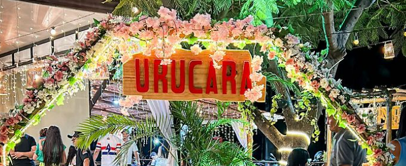
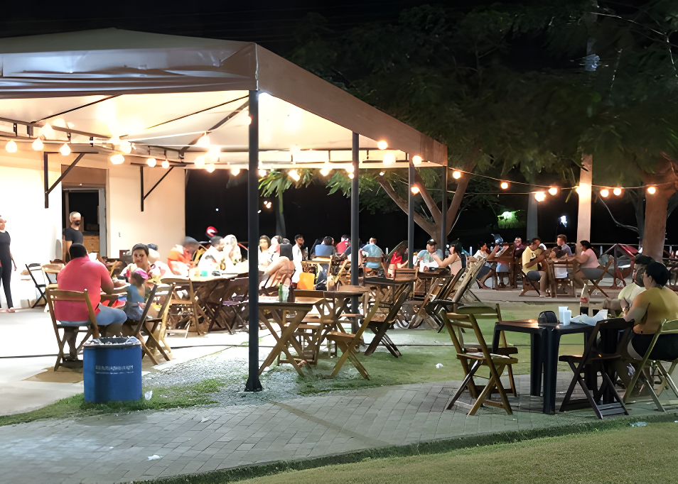

Embarque em uma jornada culinária única, onde a tradição italiana se encontra com a essência vibrante do nordeste brasileiro. Localizada estrategicamente no coração de Maranguape, a Pizzaria Urucará é muito mais do que um local para apreciar pizzas - é uma experiência gastronômica completa, marcada pelo sabor autêntico, variedade exuberante e o caloroso acolhimento nordestino.

Na Pizzaria Urucará, acreditamos que cada mordida deve ser uma celebração. Por isso, dedicamos especial atenção à preparação de nossas pizzas artesanais, usando ingredientes frescos e selecionados criteriosamente. De clássicas Margheritas a combinações inovadoras, nosso cardápio é uma ode à diversidade de sabores que agradam a todos os paladares.
Queremos que cada visita à Pizzaria Urucará seja mais do que uma refeição; queremos que seja uma experiência memorável. Nosso ambiente é cuidadosamente projetado para ser acolhedor e familiar, proporcionando o cenário ideal para encontros descontraídos com amigos e familiares. Aqui, cada detalhe reflete a calorosa hospitalidade de Maranguape.

Acreditamos que a excelência no atendimento é a base de uma experiência gastronômica inesquecível. Nossa equipe dedicada está pronta para recebê-lo com um sorriso, garantindo que cada detalhe seja cuidadosamente atendido. Seja uma refeição rápida durante a semana ou uma celebração especial, na Pizzaria Urucará, cada cliente é tratado com atenção e cortesia.
Explore nosso cardápio diversificado, mergulhe na atmosfera acolhedora e permita-se ser cativado pelos sabores inigualáveis da Pizzaria Urucará. Faça sua reserva agora e descubra por que nos tornamos a escolha preferida dos amantes de boa comida em Maranguape, Ceará. Estamos ansiosos para recebê-lo em nossa casa, onde cada mordida é uma celebração do prazer gastronômico.